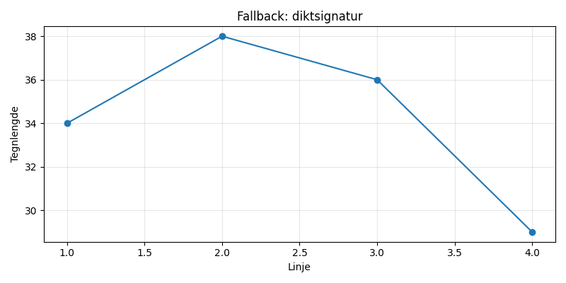

Stjerneblått te i en gammel skuff, hvor sokker danser med en eneste fjær. Månen smiler, mens en katt i drømmen spiser regnbuens søte melodi.

import matplotlib.pyplot as plt
import numpy as np
# Dikt
dikt = """Stjerneblått te i en gammel skuff,
hvor sokker danser med en eneste fjær.
Månen smiler, mens en katt i drømmen
spiser regnbuens søte melodi."""
# Generer data for en enkel flate representasjon
x = np.linspace(0, 2 * np.pi, 100)
y1 = np.sin(x)
y2 = np.cos(x)
y3 = np.exp(-x) * np.sin(x)
# Plott en 3D-flate
fig = plt.figure(figsize=(12, 8))
ax = fig.add_subplot(111, projection='3d')
ax.plot_surface(x, y1, y2, color='skyblue', alpha=0.8)
ax.plot_surface(x, y1, y3, color='steelblue', alpha=0.6)
# Legg til titler og etiketter
ax.set_title('Dikt Visualisering', fontsize=16)
ax.set_xlabel('X', fontsize=12)
ax.set_ylabel('Sokker', fontsize=12)
ax.set_zlabel('Måne', fontsize=12)
# Juster perspektivet
ax.view_init(elev=20, azim=30)
# Lagre figuren
plt.savefig(output_path)execution_ok=False fallback_used=True image_ok=True